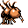

#085
Dodrio
Normal
Uses its three brains to execute complex plans. While two heads sleep, one head stays awake
Base stats Total 420
HP70
Attack110
Defense70
Speed110
Special60
Details
- Species
- Triplebird
- Height
- 5'11"
- Weight
- 188.0 lb
- Catch rate
- 45
- Base exp
- 158
- Growth
- Medium Fast
Level-up moves
LevelMoveType
StartPeck
StartGrowlNormal
StartFury AttackNormal
Lv 7LeerNormal
Lv 9Quick AttackNormal
Lv 18SupersonicNormal
Lv 22Wing Attack
Lv 25RageNormal
Lv 31Body SlamNormal
Lv 33Drill Peck
Lv 44Double-EdgeNormal
Lv 46Sky Attack
Evolution
Evolves from Doduo
Where to find
Not found in the wild — evolve, trade or catch it elsewhere.
TM / HM
TM03 Swords DanceTM06 ToxicTM08 Body SlamTM09 Take DownTM10 Double-EdgeTM15 Hyper BeamTM20 Pay DayTM31 MimicTM32 Double TeamTM33 ReflectTM34 BideTM39 SwiftTM43 Sky AttackTM44 RestTM49 Tri AttackTM50 SubstituteHM02 Fly